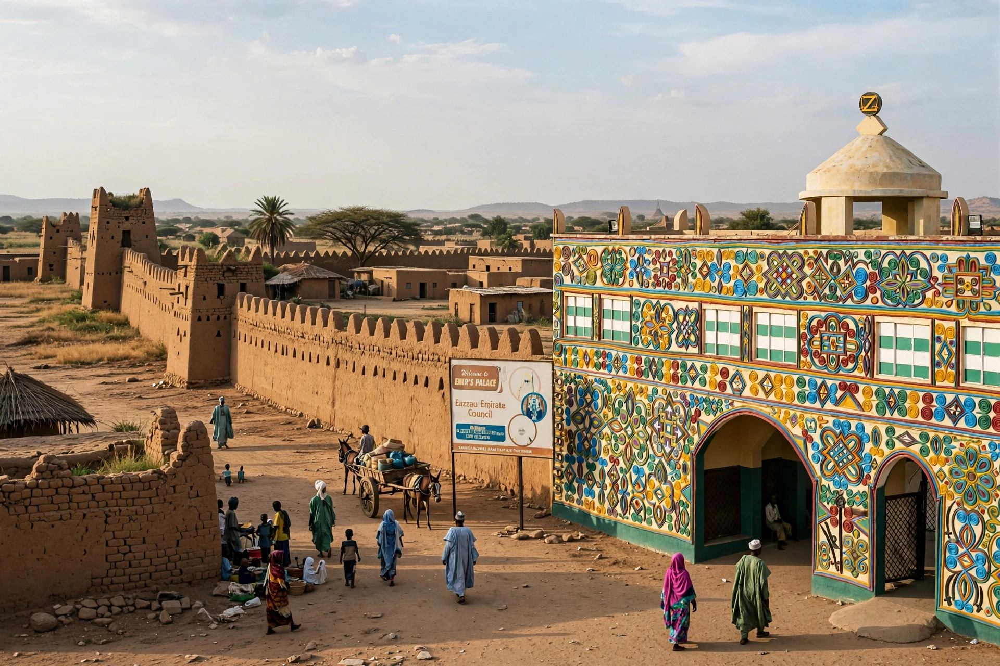

| Zaria | |
|---|---|
| Country | Nigeria |
| State | Kaduna State |
| Founded | c. 1536 (as Zazzau capital) |
| Population | Several hundred thousand (metro over 1 million est.) |

Zaria is a city in Kaduna State, northern Nigeria. Earlier known as Zazzau, it was one of the original seven Hausa city-states and today is a major educational, agricultural and transport centre, home to Ahmadu Bello University, founded in 1962 and one of Nigeria's largest universities.
Zazzau rose to prominence in the 16th century under rulers including Queen Amina, the warrior queen credited in tradition with expanding its territory and building defensive walls — segments of which, with gates such as Kofar Doka, still survive. The city traded in slaves, grain, leather and cloth. In 1804–1808 it was conquered during Usman dan Fodio's jihad and became an emirate of the Sokoto Caliphate, ruled by an emir. British forces took Zaria in 1903.
Zaria lies on the northern Nigerian plateau at about 650 m elevation, in savanna country growing cotton, groundnuts, tobacco and grains. It is a rail and road junction between Kaduna, Kano and Sokoto.
See also: Hausa people, Queen Amina